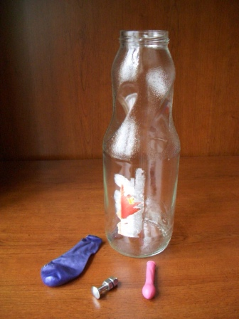
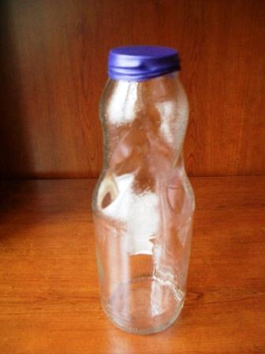

🎯 Deneyin Amacı
Atmosfer basıncının ve kaldırma kuvvetinin etkilerini gözlemlemek.
🧰 Gerekli Malzemeler
• Pet şişe veya cam kavanoz
• Küçük balon
• Büyük balon
• Küçük ağırlıklar (çivi vb.)

🧪 Deneyin Yapılışı
Küçük balon şişirilir ve ucuna ağırlıklar bağlanır.
Bu balon su içinde askıda kalacak şekilde ayarlanır.
Şişe suyla doldurulur ve balon içine yerleştirilir.
Şişenin ağzı büyük balon ile kapatılır.
Balona bastırıldığında iç basınç artar ve balon dibe batar.
El bırakıldığında tekrar yukarı çıkar.

🧠 Deneyin Fiziği
Şişe içinde atmosfer basıncı bulunur ve sistem dengededir.
Balona bastırıldığında iç basınç artar ve gaz sıkışır.
Balonun hacmi küçülür ve kaldırma kuvveti azalır.
Bu nedenle balon aşağı batar.
Basınç azaltıldığında balon tekrar genişler ve yukarı çıkar.
Bu deney, kaldırma kuvveti ve basınç ilişkisini açıkça gösterir.
🎬 Deney Videosu

Videoyu YouTube'da izlemek için görsele tıklayın.